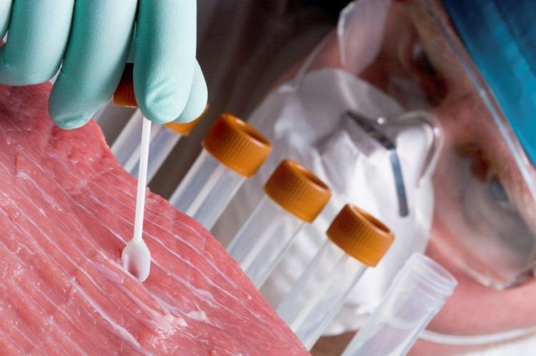
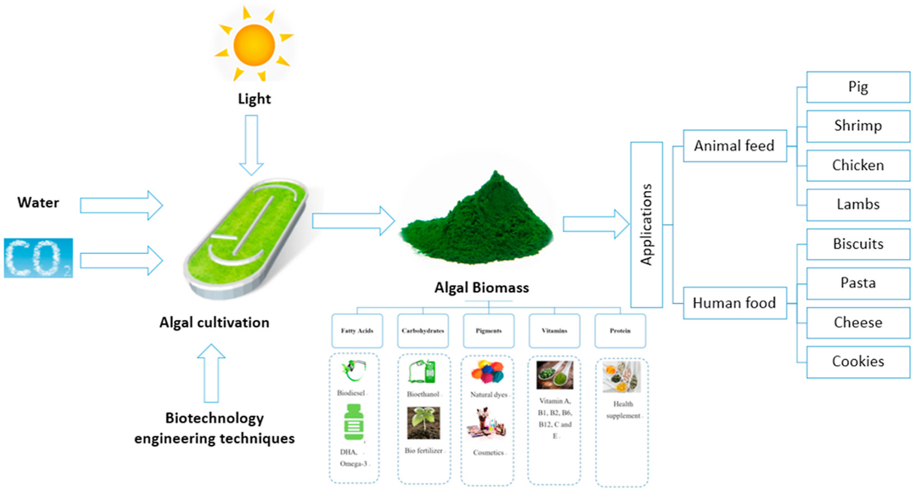

Why research alternative proteins?
My research was conducted for an ethical business course. I approached this topic with the questions, "Are alternative protein sources healthier for you than beef and are they also better for the environment?"
Let's start with the obvious question: Is animal protein healthy? The answer is that all the nutrients that animal meat can provide can be found in plants too, except vitamin B12. B12 can be found in milk and eggs so eating animals isn't really necessary. Animal protein also contains saturated fats and ingesting too much can lead to health issues.
According to my research, chickpeas, lentils, and beans should be the main sources of protein in our diet. However, look at the meals most restaurants offer. The main protein is always animal meat so it's difficult to change our way of thinking. The following are the leading (mass produced) alternative protein sources.
Lab Grown Meat
The first hamburger grown in a lab was created in 2013 at a cost of $332,000. The cost has since gone down to only about $50 now.
Let's look at this process in more detail below.
In STEP 1, a biopsy is taken from a live cow to get specific cells and muscle tissue. However, only 14 cows per year could produce the same amount of meat as 39 million cows through our current methods.
In STEP 2, the cells start to divide after being placed in a culture medium, which provides the food they need to grow. The first culture medium used was fetal bovine serum from the blood of a dead calf which is not acceptable for vegetarians. However, a plant-based serum has since been developed.
In STEPS 3 & 4, the cells have multiplied and naturally merged into small tubular shapes and are placed into the muscle tissue removed in step 1 becoming muscle strands. These strands are attached to a sponge-like scaffold made from soy protein in the bioreactor which mechanically stretches the strands “exercising” the muscle cells to increase their size.

This method of meat production will most likely start being used for pet food before humans will eat it.
My original questions for this alternative: Is this protein source healthier for you than traditional beef and is it also better for the environment? With its controlled saturated fat levels, lab grown meat could potentially be better, but it would still need to be eaten in moderation. And as for the environmental impact, even though animals still need to be used, the impact would be much better than it is now.
Plant Based Meat
What you're looking at in the picture below is soybeans. They are the base of most plant-based meats to mimic the look, taste, and texture of animal meat using plants.

These are the 3 main methods of making plant-based meats:
(A) Low moisture extrusion delivers a fibrous, spongy texture that needs rehydration and looks like ground meat.
Whereas (B) High moisture extrusion delivers a more fibrous, striated, meaty product that must be chilled or frozen The meat in this picture looks like it's going to become bacon strips.
(C) Shear cell technology is the most common technology in use today as it delivers a layered fibrous structure that closely matches the appearance and texture of steak.

To show how much of an effort has been put in to making plant-based meats appear more like the real thing, they use coconut oil as an ingredient because it makes a plant-based burger firm when it's refrigerated, it adds white flecks which look like animal fat for visual appeal, and the coconut oil sizzles when it hits the pan or grill just like real meat.
One of the challenges faced with making plant-based meat is that they usually end up being grey in color which is unattractive and has been labeled the “cosmetic color problem” which means they require color additives.
This challenge led to an ethical dilemma by the Impossible Foods company. They discovered an ingredient called heme in animal blood that made their burgers look and taste more like real beef. Heme is what makes blood red, meat pink, and gives blood it's subtle metallic flavor. The good news is that heme can be found in plants too. Can you guess which plant is used to add heme to Impossible's meats? If you're thinking soybeans, you would be right!
Let's take a closer look at how Impossible Foods creates their Impossible burgers below.
In STEP 1 Impossible Foods extracts the heme from soybean plant roots and adds it to a specific yeast.
In STEP 2, the yeast is fermented, similar to how certain beers are made. This process causes the yeast to multiply itself and produce more heme.
In STEPS 3 & 4, the heme is extracted from the yeast and Added to the other ingredients that make up the Impossible burger.

Now let's ask our original questions for this alternative: Is this protein source healthier for you than traditional beef and is it also better for the environment? With all of the added ingredients to achieve the texture, color, and taste of traditional meat, the end products aren't much healthier for you yet. They are highly processed with a lot of additives and they usually have the same amount of calories and saturated fats as animal meat so would still need to be eaten in moderation. As for the environment it is somewhat better but growing MORE plants to bioengineer plant-based meat will require more water and land.
Single Cell Protein
Single cell proteins are the third alternative protein source and can produce massive quantities in a single day with up to 60% protein by weight when soybeans only have 40%. These proteins usually come from microalgae, fungi, or bacteria.

For the sake of time, I only researched microalgae that are tiny organisms found in water. In addition to protein, and other nutrients, microalgae provides vitamin B12. B12 is the vitamin I mentioned earlier that can't be found in plant-based diets because it's only found in meat, milk, and eggs.
Growing microalgae isn't as involved as lab grown or plant-based meat processes. As you can see below, microalgae only needs sun, carbon dioxide, and water to grow. Artificial sunlight can be used, and the water can be fresh, waste, or seawater, it's not picky. It can be grown out in the open like a pond or in a closed system like a photobioreactor. When microalgae is harvested and processed, it can be used for animal and human foods, along with becoming biofuel for engines. I think the processing is a bit different for both instances though.
So how to do you eat microalgae? The final product is sold as a powered supplement that you add to your food in the same way as you would add regular protein powder to a smoothie.
Let's ask our original questions for this alternative: Is this protein source healthier for you than traditional beef and is it also better for the environment? In my research I literally could not find any drawbacks to eating microalgae, except for the fact that the process is not regulated yet in the US so the potential for eating contaminates or heavy metals is higher. As for being better for the environment, the answer is definitely YES! Using the same amount of land, it can produce up to 15 tons of protein per year compared to around only 1 ton for soybeans.
Insect Protein
The last alternative protein source for today is insects.

Just like microalgae, in addition to protein, they contain many nutrients and vitamins, including B12. Again, vitamin B12 can't be found in plant-based diets.
The practice of eating insects as a type food is not a new habit or science, approximately two billion people around the world regularly eat insects. The top three categories of the most commonly eaten insects are beetles, caterpillars, ants, bees, and wasps. Below is a chart of insect nutrition based on protein and fat content.

Less resources are used to harvest insects. As you can see below, MUCH less water is required for crickets than for beef. In addition, insects require up to 14 times less land than cattle and emit up to 13 times less greenhouse gasses. They are also not that picky about what they eat.

The big question is, how do you get people to eat insects? Funny enough, research has found that women are less likely to eat insects than men! In general, people are more willing to eat them when they're “hidden” in other foods.
The funniest comment I read was, “The hardest part about eating crickets is wrapping your brain around eating something you'd usually spray with Raid or squash with a book.”
Let's ask our original questions for this last alternative: Is this protein source healthier for you than traditional beef and is it also better for the environment? Insects are related to crustaceans such as shrimp and crab, so people who are allergic to shellfish may not be able to eat them. Aside from that, and the gag reflex, I think this is a good alternative protein source, but there are no regulations for raising and harvesting insects in the US yet either. As for the environmental impact, I definitely think this would be better than what we are doing now. And farmers could harvest the insects they usually use pesticides on.